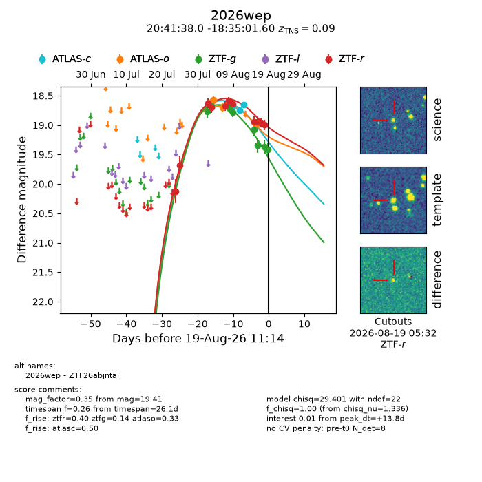
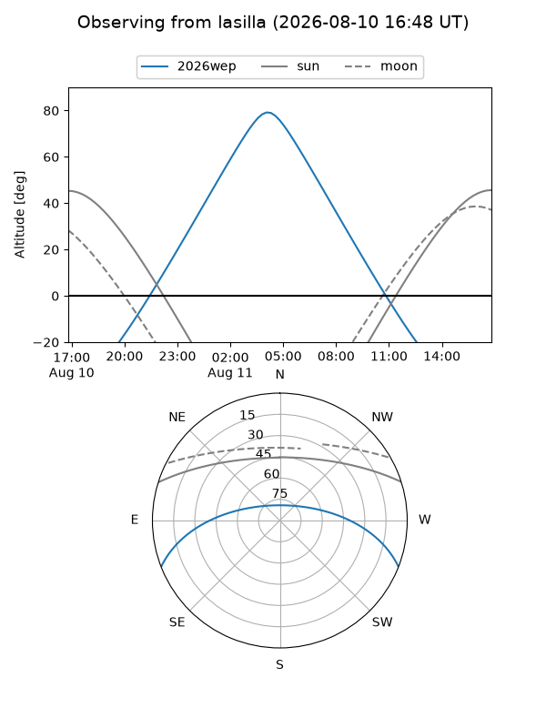
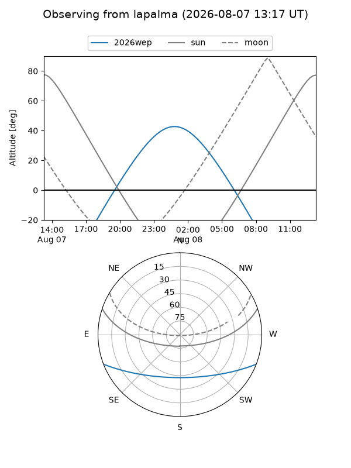
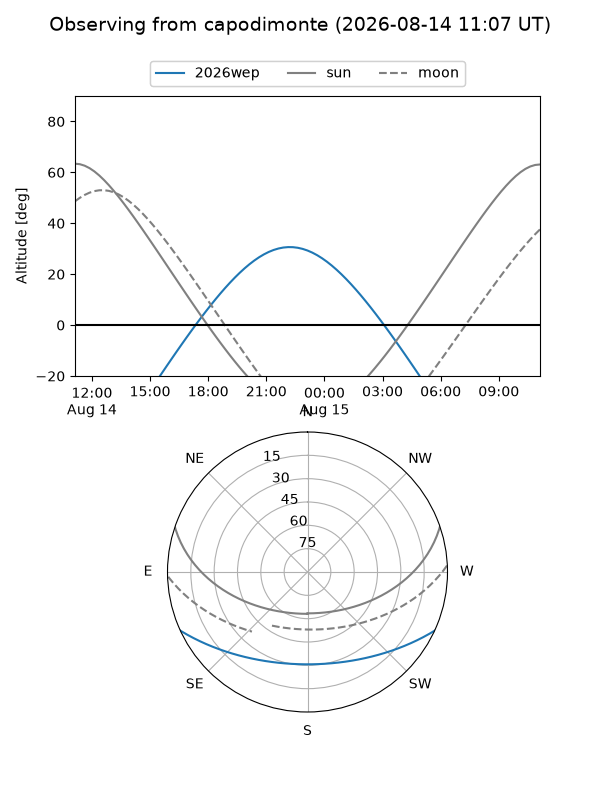
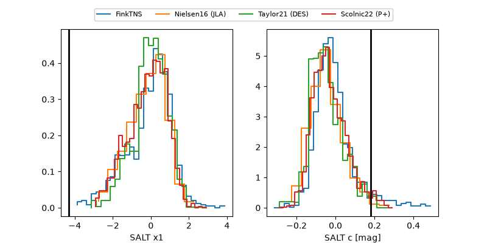

2026wep
Target 2026wep at 2026-08-19 11:17
Aliases and brokers:
FINK-ZTF: ztf.fink-portal.org/ZTF26abjntai
Lasair-ZTF: lasair-ztf.lsst.ac.uk/objects/ZTF26abjntai
ALeRCE-ZTF: alerce.online/object/ZTF26abjntai
YSE-PZ: ziggy.ucolick.org/yse/transient_detail/2026wep
TNS name: wis-tns.org/object/2026wep
Direct TNS query: direct search
alt names
ZTF26abjntai (ztf,fink_ztf)
2026wep (tns,yse)
Coordinates:
equatorial (ra, dec) = 310.4084,-18.58378
equatorial (HMS+DMS) = 20:41:38.01,-18:35:01.60
galactic (l, b) = (27.2420,-32.37644)
Flags:
TNS type: SN Ia
TNS redshift: 0.0900
peak dt: +13.8
Photometry:
last atlasc=18.65, atlaso=18.99, ztfg=19.41, ztfr=18.99
3 atlasc, 4 atlaso, 8 ztfg, 11 ztfr detections
Lightcurve

Visibility



Additional plots
